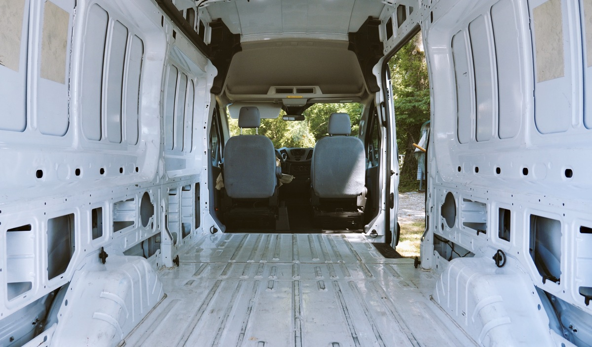
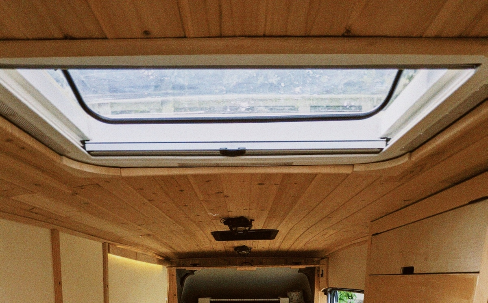

<section class="intro">

	<div class="wrap">

		<h1>{{ page.title }}</h1>

		<p>{{ page.date | date_to_long_string }}</p>

	</div>

</section>

<section class="single">

	<div class="wrap">

        <div class="gallery" data-columns="1">
            
            
            
            
            
            
        </div>

	</div>

</section>